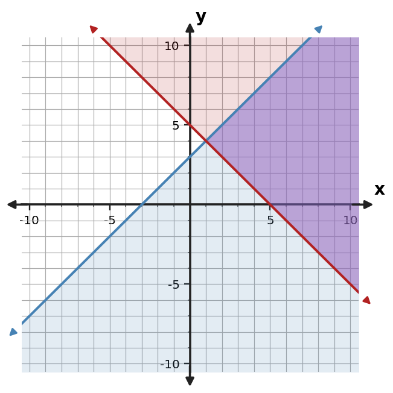
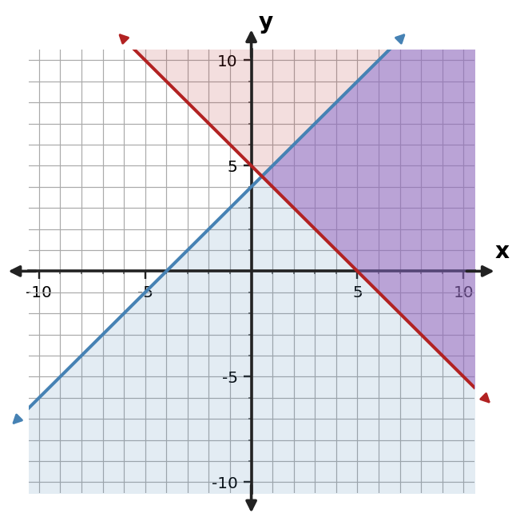
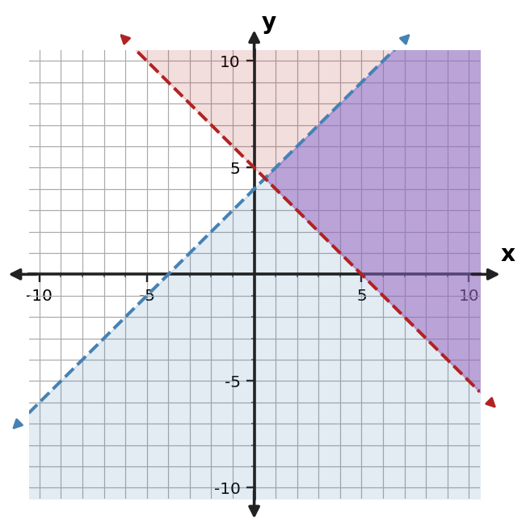

Section 3.5: Linear Systems of Inequalities
Guided Notes
Use representations and algebra to identify values that satisfy multiple relationships or constraints.
Learning Target
Students will analyze and interpret systems of linear inequalities.
- I can formulate a system of inequalities that represents multiple constraints.
- I can extend graphing strategies to represent overlapping solution regions.
- I can apply feasible-region reasoning to interpret possible solutions in context.
Vocabulary / Key Notation Preview
system of inequalities • feasible region • constraint • boundary • solution region
Sort the vocabulary. Write each vocabulary word in the column that best matches what you know right now. You may move a word later.
| Know for sure | Recognize | Don't know yet |
|---|---|---|
What's to Come
DO NOT SOLVE IT YET.
Circle anything familiar, underline symbols, labels, conditions, data, or features that seem important, and write short notes about what you think may matter later.
Two constraints are graphed at once. Describe why the darker overlap matters, choose one point that is feasible for both constraints, and explain why a point in only one shaded region is not a solution of the system.

Let's Get Started
Skim the section. Record what catches your attention before you read closely.
| What I noticed | |
|---|---|
| What I predict | |
| What I wonder |
READ IN SHORT CHUNKS.
Annotate the words and visuals together. Underline evidence, circle or highlight bold vocabulary, label arrows, measurements, or important features, connect sentences to figures, and jot short questions or connections in the margins.
I can formulate a system of inequalities that represents multiple constraints.
A system of inequalities models several conditions that must all be satisfied. Each inequality represents one constraint on the same variables. Words such as “at most,” “no more than,” “at least,” and “minimum” help determine which inequality symbol belongs in the model.
Variable definitions remain essential. If $s$ is stools and $t$ is tables, then “at most 18 items total” becomes $s+t\le18$. “At least 6 tables” becomes $t\ge6$. When the variables count physical objects, nonnegativity constraints such as $s\ge0$ and $t\ge0$ may also be part of a complete model.
The inequalities work together, not separately. A candidate pair is a solution only if it satisfies every condition in the system. Adding constraints narrows the set of allowed choices because every new condition must also be met.
Before graphing, read each inequality for meaning. Ask what quantity is limited, whether the limit is a maximum or minimum, and whether equality is allowed. Those decisions determine both the algebraic symbol and the eventual boundary behavior.
- What does each inequality represent in a system of inequalities?
- How do “at most” and “at least” translate differently?
- Why can adding a new constraint never create new feasible points that failed an earlier constraint?
- Each inequality represents one condition that the same variables must satisfy.
- At most gives an upper bound ($\le$); at least gives a lower bound ($\ge$).
- A system requires all constraints simultaneously, so new constraints can only keep or remove existing candidates.
| Phrase | Typical meaning |
|---|---|
| at most / no more than | $\le$ |
| at least / minimum | $\ge$ |
| less than | $\lt $ |
| greater than | $\gt $ |
| nonnegative | $\ge0$ |
Example 1: Write Multiple Constraints
A workshop can build at most 18 stools and tables total, and must build at least 6 tables. Let $s$ be stools and $t$ be tables. Write a system of inequalities.
$s+t\le18$, $t\ge6$, with $s\ge0$ and $t\ge0$ if nonnegativity constraints are included.
You Try It 1: Write Multiple Constraints
A workshop can make at most 24 desks and chairs in total and must make at least 8 chairs. Let $d$ be desks and $c$ be chairs. Write a system of inequalities, including nonnegativity.
$d+c\le 24$, $c\ge 8$, $d\ge0$, and $c\ge0$.
I can extend graphing strategies to represent overlapping solution regions.
To graph a system, graph each inequality on the same coordinate plane. Each boundary separates points that satisfy one inequality from points that do not, and each inequality contributes its own shaded solution region.
The feasible region is the overlap of all individual solution regions. Darker or multiply shaded areas are useful visual evidence because they show where every constraint is true at once. A point in only one shaded region does not satisfy the full system.
The graphing rules from a single inequality still apply: strict boundaries are dashed, inclusive boundaries are solid, and a test point can determine the correct side. The new idea is logical intersection—keep only the points that survive every inequality.
Some systems have a large overlap, a narrow polygon-like region, an unbounded region, or no overlap at all. The shape depends on the constraints, but the definition does not change: the feasible region contains exactly the points satisfying all inequalities.
- What is the feasible region?
- Why is a point in only one shaded region not a solution of the system?
- What stays the same from graphing one inequality to graphing a system?
- The overlap where every inequality is satisfied.
- It violates at least one other constraint.
- Boundary style and test-point/shading rules for each individual inequality.
For a system such as
$y\le x+3$ and $y\ge -x+5$
each inequality has its own solution region. The system solution is the intersection of those regions—the points that satisfy both statements.
Example 2: Read an Overlap Region
Use the graph to describe the feasible region of the system. Give one point that appears feasible.

The feasible region is the overlap of both shaded half-planes. For example, $(1,4)$ lies in the overlap.
You Try It 2: Read an Overlap Region
Use the graph to describe the feasible region of the system. Give one point that appears feasible.

The feasible region is the overlap of both shaded half-planes. For example, $(2,4)$ lies in the overlap.
- How can a point lie in one shaded region and still fail the system?
Example 3: Compare Another Feasible Region
Use the graph to describe the feasible region of the system. Give one point that appears feasible.

The feasible region is the overlap of both shaded half-planes. For example, $(2,4)$ lies in the overlap.
You Try It 3: Compare Another Feasible Region
Use the graph to describe the feasible region of the system. Give one point that appears feasible.

The feasible region is the overlap of both shaded half-planes. For example, $(2,4)$ lies in the overlap.
Example 4: Identify a Feasible Point
Use the graph to describe the feasible region of the system. Give one point that appears feasible.

The feasible region is the overlap of both shaded half-planes. For example, $(-2,4)$ lies in the overlap.
You Try It 4: Identify a Feasible Point
Use the graph to describe the feasible region of the system. Give one point that appears feasible.

The feasible region is the overlap of both shaded half-planes. For example, $(2,2)$ lies in the overlap.
I can apply feasible-region reasoning to interpret possible solutions in context.
Feasibility can be checked without drawing the entire graph. Substitute a candidate point into every inequality. The point is feasible only if every resulting statement is true. One failed inequality is enough to reject the point.
In context, feasibility means more than “the algebra worked.” A point should also make sense for the quantities. Counts may need to be whole numbers, production amounts cannot be negative, and a boundary point is allowed only when the corresponding inequality includes equality.
Graphical and algebraic checks should agree. A point inside the overlap should satisfy every inequality when substituted. A point outside the overlap must violate at least one constraint. Moving between these views makes the model easier to interpret and defend.
When making a decision from a feasible region, describe which constraints the chosen point satisfies and what the coordinates mean. The graph shows the menu of possible choices; the context gives those choices meaning.
- What algebraic test determines whether a point is feasible?
- Why might a point satisfy all written inequalities but still be unreasonable in context?
- How should the graph and substitution check agree for a feasible point?
- Substitute the point into every inequality and require every statement to be true.
- The situation may impose implicit conditions such as nonnegative or whole-number quantities.
- A feasible point lies in the overlap and makes every inequality true.
| Candidate | Constraint 1 | Constraint 2 | Feasible? |
|---|---|---|---|
| $(3,2)$ | $2\le6$ ✓ | $2\ge2$ ✓ | Yes |
| $(0,0)$ | Check | Check | Only if both are true |
Example 5: Explain Feasibility
Explain how the word “system” changes the requirement from satisfying one inequality to satisfying both.
A feasible point must satisfy every inequality in the system, so it must lie in the overlap of all solution regions.
You Try It 5: Explain Feasibility
State the test a point must pass before it can be called feasible for two simultaneous inequalities.
A feasible point must satisfy every inequality in the system, so it must lie in the overlap of all solution regions.
Example 6: Test a Candidate Point
Determine whether $(3,2)$ is feasible for $y\le x+3$ and $y\ge -x+5$. Show both checks.
Yes. $2\le6$ and $2\ge2$, so the point satisfies both constraints.
You Try It 6: Test a Candidate Point
Determine whether $(2,3)$ is feasible for $y\le x+2$ and $y\ge -x+4$. Show both checks.
$3\le4$ is true and $3\ge2$ is true, so the point is feasible.
Summary
- A system of inequalities represents multiple constraints on the same variables.
- Translate each condition carefully, including nonnegativity when the context requires it.
- Graph each inequality using the same boundary and shading rules used for a single inequality.
- The feasible region is the overlap where every inequality is true.
- A candidate point is feasible only when it satisfies every constraint and makes sense in context.
Common Mistakes
| Common mistake | Better habit |
|---|---|
| Treating a point that satisfies one inequality as feasible. | Check every inequality in the system. |
| Shading the union of regions instead of the overlap. | Keep only the region that satisfies all constraints simultaneously. |
| Ignoring nonnegativity or whole-number requirements. | Use the context to identify additional feasibility conditions. |
| Forgetting boundary inclusion. | Use solid/dashed boundaries according to whether equality is allowed. |